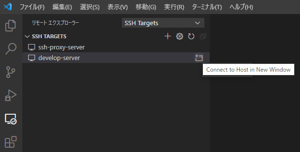
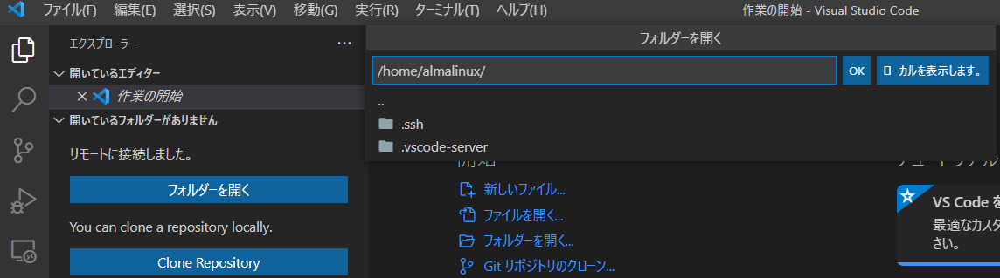
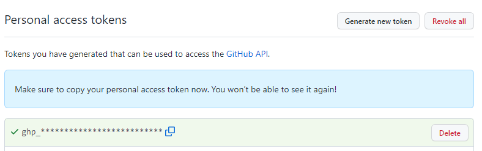
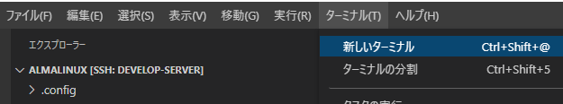
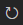
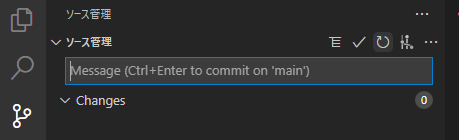

はじめに¶
本手順は、ITA2.0の開発（Web,API）するための開発環境を構築する手順となります
- point_right:
旧リポジトリ(it-automation2-test)より新しいリポジトリへ移行する場合は、コンテナの解放 を実施したのち、開発ワークスペース準備手順から実施してください。
開発・試験環境全体図¶

image.png¶
事前準備¶
構築するにあたって、サーバーの払い出しを受ける必要があります。環境の管理者に依頼願います。 本手順を実施していくにあたり以下の情報等が必要となります。事前に準備（確認）をお願いします。
必要な情報 | 必要な情報 | 備考 | | ————————————— | —————————————————————————————————- | | 踏み台サーバーのIPアドレス | 環境の管理者に確認 | | 踏み台サーバーの接続ユーザ | 環境の管理者に確認 | | 踏み台サーバーのポート番号(http) | 環境の管理者よりサーバー払い出し時に提供 | | 開発サーバーのIPアドレス | 環境の管理者よりサーバー払い出し時に提供 | | サーバーの接続鍵 | 環境の管理者より提供 | | 個人用のGithubアカウント | ※事前にGithubにアカウント登録してください | | 個人用のGithubパスワード | 手順の中でブラウザからgithub.comにサインインしますので、サインインできるようにしておいてください | | 開発対象のexastro-suiteのリポジトリURL | 開発リーダーに確認 | | 開発コンテナを開くためのディレクトリ | 開発リーダーに確認 |
VPC準備手順¶
VSCODEインストール・設定¶
VSCODEインストール VSCODE ver 1.68.0をインストールします ※ 2022/06/14時点の最新版 ※1.68.0以外をインストールしたいときは
以下よりインストールhttps://update.code.visualstudio.com/1.68.0/win32-x64-user/stable
※既にインストール済みの方は、最新版に更新していてください
VSCODE 自動更新の抑止
VSCODEの「ファイル」⇒「ユーザ設定」⇒「設定」メニューを選択
「ユーザー」タブ ⇒ 「アプリケーション」 ⇒ 「更新」
Modeを「manual」に変更

setting1.png¶
バージョンの確認 この設定後、「ヘルプ」⇒「バージョン情報」でVer.1.68.0になっていることを確認してください。 最新版にアップデートされている場合は、再度セットアップを実行してください。

VSCODE ターミナルの設定VSCODE上のターミナルでBSキーを使うと表示が崩れる事象を回避するため、以下の設定を行います
VSCODEのメニューの「ファイル」⇒「ユーザ設定」⇒「設定」メニューを選択
「ユーザー」タブ ⇒ 検索欄
Local Echo Latency Threshold-1に変更
VSCODE Remote Development(VSCODE拡張)のインストール
VSCODEの以下の拡張機能をインストールします ※検索欄に
Remoteと入力すると素早く検索できますRemote Development
Remote - SSH:Editing Configuration Files

setting2.png¶
VSCODE Remote Developmentのインストールの確認 リモートエクスプローラーの選択肢に「SSH Target」が入っていることを確認してください

入っていない時は次の手順の「VSCODE Remote Developmentの再インストール」を実施してください
VSCODE Remote Developmentの再インストール 先の手順で、リモートエクスプローラーの選択肢に「SSH Target」が入っていない場合に本手順を実施します
左脇の「拡張機能」を選択して「Remote - SSH」を選択後「アンインストール」をクリックします

アンインストールすると、画面上の同じ箇所に「再読み込みが必要です」が表示されますので「再読み込みが必要です」をクリックします（VSCODEが再起動します）
VSCODE再起動後、「Remote - SSH」を再度インストールします インストール後、リモートエクスプローラーの選択肢に「SSH Target」が入っていることを再度確認してください
ssh鍵ファイルの配置¶
環境の管理者よりサーバー払い出し時に提供してもらった鍵ファイル(.pem)を以下のフォルダ配下に格納します
- VPCの格納先フォルダ
${VPCアカウント}は自身のアカウントで読み替えてください
D:\Users\${VPCアカウント}\.ssh ※
フォルダが存在しない場合はフォルダを作成して、格納してください
※ 既に格納済みの場合は改めて格納は不要ですが、その場合は鍵の格納先を読み替えて設定してください<br>
VSCODE接続先設定¶
.ssh:raw-latex:configファイルの編集画面起動 VSCODEで以下の操作を行います
左脇のリモートエクスプローラのアイコンを選択
“SSH Targets”の欄の歯車マークをクリック
「
D:\Users\${VPCアカウント}\.ssh\config」を選択
.ssh:raw-latex:configファイルの設定追加 以下の内容を追記します
Host relay-server # 踏み台サーバーのIPアドレスを指定 HostName 10.xxx.xxx.xxx # 踏み台サーバーの接続ユーザ User centos # VPC上の鍵ファイルのパス IdentityFile D:\Users\${VPCアカウント}\.ssh\xxxxx.pem Host develop-server # 払い出された開発サーバのIPアドレス HostName 192.168.xxx.xxx User almalinux ProxyCommand ssh -W %h:%p relay-server # VPC上の鍵ファイルのパス IdentityFile D:\Users\${VPCアカウント}\.ssh\xxxxx.pem
接続確認 VSCODEで以下の操作を行い、開発サーバーに接続します
リモートエクスプローラー（SSH Targets）で「develop-server」右の「アイコン」（Connect to Host New Window)をクリック 
OSの選択で「Linux」を選択
左上の「エクスプローラ」を選択し「フォルダーを開く」を選択し、homeディレクトリ（デフォルト:/home/almalinux）で「OK」をクリック 
開発サーバー準備手順¶
github personal access token払出¶
以下のリンクを「新しいタブ」で開いてください https://github.com/settings/tokens
以下の画面が表示されますので、「Generate new token」をクリックします

パスワードの確認を求められますので、パスワードを入力します
New Personal access token画面が表示されますので、以下の指定をして「Generate token」（画面の下の方）をクリックします | 指定項目 | 指定値 | | ———- | ———————————————————————- | | Note | tokenの名前（githubの一覧に出るだけなので何でもよい） | | Expiration | tokenの有効期限特に問題なければ、「No expiration」（無期限）を選択 | | Select scopes | repoをチェックON |
入力イメージ

「Generate token」クリック後に以下の画面が表示されますので、「ghp_＊＊＊＊」の部分を次の手順で使いますので控えておいてください 
git設定¶
VSCODEでdevelop-serverに接続 リモートエクスプローラー(SSH Target)のalmalinux脇のフォルダアイコンをクリックします ※ すでに接続済みの場合は、不要です

VSCODEでターミナル起動 VSCODEのメニューの「ターミナル」⇒「新しいターミナル」を選択します 
ターミナルで以下コマンドを実行
${gitアカウント}とxxxxxxxxx@ncontr.comは自身の値を指定してくださいgit config --global user.name "${gitアカウント}" git config --global user.email "xxxxxxxxx@ncontr.com"~/.netrcを作成
以下のコマンドを実行
bash vi ~/.netrc.netrc の内容（ghp_**********の部分は先の手順で取得したgithub personal access tokenを設定します）text machine github.com login githubユーザ名 password ghp_**********************************
開発ワークスペース準備手順¶
以下は開発対象のリポジトリ毎に実施します
個人リポジトリ準備¶
リポジトリのfork ※ 以下はexastro-suite/exastro-it-automationのリポジトリになっています
別のリポジトリの場合は、開発リーダから指定された開発対象のexastro-suiteのリポジトリURLをforkして下さい
※ 旧リポジトリ(exastro-suite/it-automation2-test)から変更する場合は、改めてforkしてください。
開発サーバへCLONE¶
リポジトリのCLONE
VSCODEのターミナルで、以下コマンドを実行します ```bash # 自身のGitHubアカウントを変数に格納 # your-github-account を自身のGitHubアカウント名に変更 MY_GITHUB_ACCOUNT=“your-github-account”
# 開発リポジトリ名を変数に格納 # 開発リーダから聞いた開発対象のリポジトリ名を指定 REPONAME=“exastro-it-automation” ```
# 作業用のディレクトリを作成 ※すでに作成済みの場合は、必要ありません mkdir -p ~/${MY_GITHUB_ACCOUNT} # exastro-it-automation のフォークリポジトリをクローンする cd ~/${MY_GITHUB_ACCOUNT} git clone https://github.com/${MY_GITHUB_ACCOUNT}/${REPONAME}.git # upstreamの設定 cd ~/${MY_GITHUB_ACCOUNT}/${REPONAME} git remote add upstream https://github.com/exastro-suite/${REPONAME}.git # 設定内容が反映されているのを確認 git remote -v
結果表示イメージ
origin https://github.com/[your-github-account]/exastro-it-automation.git (fetch) origin https://github.com/[your-github-account]/exastro-it-automation.git (push) upstream https://github.com/exastro-suite/exastro-it-automation.git (fetch) upstream https://github.com/exastro-suite/exastro-it-automation.git (push)
ブランチの取込と切替:new:¶
fork後にcloneした環境では、デフォルトだとmainブランチ以外は取り込まれておりません。次の手順を実施して、ブランチの取り込みを行います。
※forkした際に、mainブランチのみのチェックをしなかった場合は、ブランチが反映済みとなっております。 以下のコマンドを入力して、対象のブランチがあれば取り込みは不要となります。
git branch
結果（2.0を開発対象とする場合の例）
* 2.0
main
上流リポジトリ(exastro-suite)のブランチ取込¶
「プル、プッシュ」「すべてのリモートからフェッチ」を選択します

image.png¶
VSCODEでターミナルを起動し、forkしたローカルのリポジトリで以下のコマンドを実行します
git checkout -b [取り込むブランチ] upstream/[取り込むブランチ] git branch --unset-upstream
VSCODEで当該リポジトリを最新表示します 以下のアイコンをクリック 
VSCODE上に「ブランチの発行」のボタンが表示されますので、クリックします

image.png¶
VSCODEのコマンドパレットにoriginとupstreamの選択がでますのでoriginを選択します するとforkしたリポジトリに[取り込んだブランチ]が作成されます

image.png¶
ブランチの切替¶
取り込んだブランチで、開発するブランチをVSCODEから選択します

image.png¶
選択対象は、「origin/xx.xx」を選択します。(upstreamは選択しません）
※ブランチの運用方法については、/ExastroPlatform/開発環境/github 運用を確認してください。
envファイルの作成:new:¶
devcontainerを起動する前に、envファイルを設定する必要があります。
※システムごとに使用する環境変数は、
/home/almalinux/[Your GitHub Account]/exastro-it-automation/.devcontainer内の .envに記載する必要があります。.env.sampleの内容をもとに、.envファイルを作成して、起動してください。 先に起動してしまった場合は、再度rebuildを実行してください。※.envは、gitには登録されませんが、他の名称だとgitに公開されます、秘匿情報を扱う場合は、gitに登録されないように注意してください。
VSCode ディレクトリ追加¶
VSCODEのリモートエクスプローラー(SSH Targets)でdevelop-server脇のアイコン（Connect to Host in New Window）をクリックします

setting7.png¶
VSCODEの画面が新たに立ち上がります
VSCODEのエクスプローラー（左脇のアイコン）を選択し、「フォルダーを開く」ボタンをクリックします

VSCODEの上部にディレクトリの選択が表示されますので、開発対象のコンテナを開くためのディレクトリを選択します exastro-suite/exastro-it-automationのAPIを開発する際は以下を指定します （画像と選択するディレクトリは違います）
/home/almalinux/${MY_GITHUB_ACCOUNT}/exastro-it-automation/.devcontainer/ita-api-organization
setting9.png¶
開発コンテナ環境 起動確認¶
VSCODEを起動し、リモートエクスプローラー(SSH Targets)から作業対象のコンテナのディレクトリを開きます ※ ita-api-organizationを開きます

※ VSCODEが起動している場合はすべて閉じてから実行してください
コンテナで起動 以下のどちらかの操作を行います
右下の通知に表示される「Reopen in Container」をクリック

左下の「>< SSH: develop-server」をクリックし、「Reopen in Container」を選択

※ 初回起動時はコンテナのビルドが行われるので暫くかかります ※ ２つ同時にコンテナビルドを実行しないようにしてください（ビルドを平行させるとエラーとなります） ※ 起動中、右下に表示される「Starting Dev Container (show log)」を押下することで、ビルド状況が表示されます、エラーがあった際もこちらに表示されます
コンテナビルド時に以下のメッセージが表示されることがあります（コンテナビルド時はほぼほぼ出ます）
 その際は「ウィンドウの再読み込み」をクリックしてください
その際は「ウィンドウの再読み込み」をクリックしてください利用手順 実際にVSCODEで開発をしていく手順は以下に記載しています /ExastroPlatform/開発環境/利用方法
付録¶
VSCODEバージョン一覧¶
以下よりVSCODEのリリース一覧を確認できます https://code.visualstudio.com/updates/
インストールは「Windows」のUserリンクをクリックします